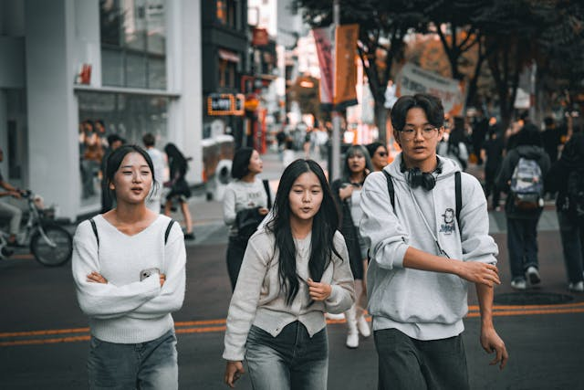
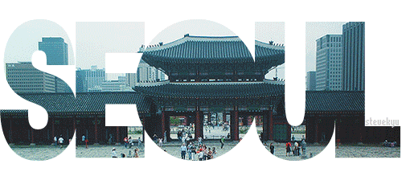
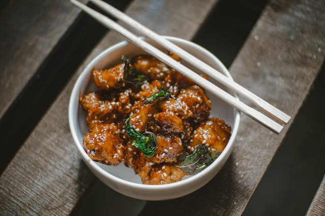
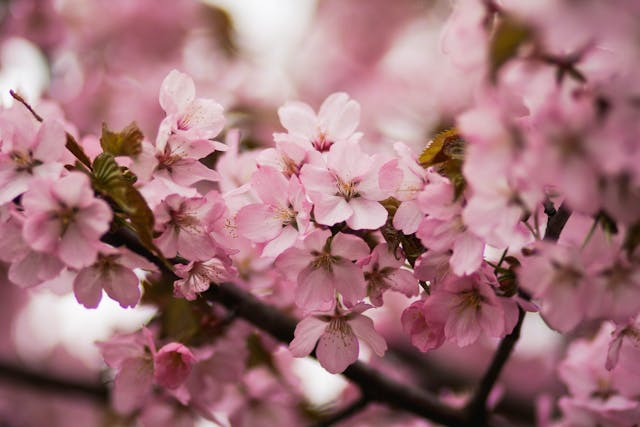
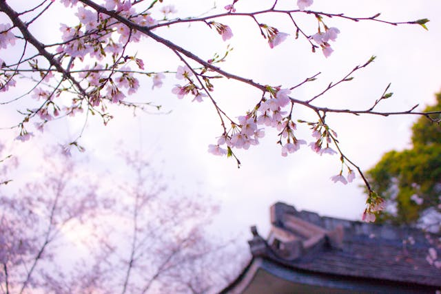
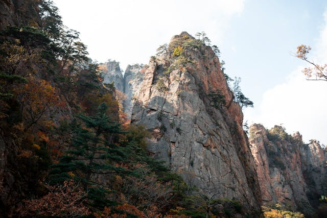

Seúl, la joya de Asia
La capital de Corea del Sur, Seúl, está ubicada al noroeste del país, ocupa el lugar 16 en la lista de las ciudades más grandes del mundo. El Río Han atraviesa la ciudad y su historia comienza cuando el reino Baekje, uno de los Tres Reinos de Corea, se fundó en Wiryeseong (hoy, el sur de Seúl) por el monarca Onjo. El verano en Seúl es muy caluroso y lluvioso, pues puede alcanzar temperaturas de hasta 29 ºC y llover hasta 15 días, mientras que en el invierno la temperatura mínima puede llegar a ser -6 ºC. Así, pues, lleva un paraguas o impermeable para el verano y ropa térmica en invierno. Viajar hacia un lugar con costumbres, tradiciones y cultura tan diferentes, es una experiencia tan enriquecedora que cambiará por completo cómo ves el mundo, para mí es un sueño poder viajar a Corea del Sur, espero hacerlo algún día.
Seúl, es la capital de Corea del Sur desde la creación de esta república en 1948, la capital histórica de Corea desde hace más de 600 años y la ciudad más poblada de la península de Corea. Hoy en día, Seúl es considerada una ciudad global, resultado de una explosión de crecimiento económico conocido como el Milagro del río Han, que recuperó a una ciudad destruida por la guerra. Es la cuarta economía metropolitana del mundo; con un PIB de 773 900 millones de dólares estadounidenses, solo por detrás de Tokio, Nueva York y Los Ángeles. Con unos 10 millones de habitantes en la ciudad propiamente dicha, y 24,5 millones en toda el área metropolitana, que incluye el puerto de Incheon y la provincia de Gyeonggi, se trata de la cuarta área metropolitana más grande del mundo. En 2012, las Naciones Unidas situaron la calidad de vida de Seúl por encima de ciudades como Nueva York, Londres o Melbourne, y por debajo de Tokio o París.
Dato curioso, el nombre español Seúl, probablemente influido por la adaptación francesa Séoul, procede de una mal interpretación de la transcripción oficial Seoul, en la que el dígrafo eo representa una vocal semiabierta posterior no redondeada o abierta, por lo que la pronunciación coreana se asemeja más a Sóul que a Seúl.
Cocina coreana
La cocina coreana está compuesta por aromas y sabores únicos. Además de ser altamente nutritiva, también es baja en calorias. Los condimentos incluyen ajo, pasta de pimiento rojo picante coreano, cebolletas, salsa de soja, pasta de alubias fermentadas, jengibre y aceite de sésamo. Los visitantes no pueden decir realmente que han estado en Corea si no han probado el kimchi. Este plato de acompañamiento está presente en casi todas las comidas y hay más de 200 variedades de kimchi, dependiendo de la región y de los ingredientes empleados. Los platos más familiares para los paladares occidentales son las galbi (costillas adobadas) y el bulgogi (ternera o cerdo adobados en salsa de soja dulce). Estos dos platos de came se sirven casi siempre en las cenas coreanas. Se cocinan en la misma mesa sobre un fuego de carbón y ninguno es particularmente picante. Otros platos coreanos populares son el bibimbap (una mezcla de arroz, vegetales, huevo y pasta de pimiento rojo picante coreano), el doenjang jiigae (estofado de pasta de soja), los naengmyeon (fideos de alforfón en caldo frío) y el samgyetang (sopa de pollo y ginseng).
Una colocación de la mesa coreana típica consta de arroz, sopa y unos pocos platos de acompañamiento, que incluyen el plato de acompañamiento esencial, el kimchi. El arroz, la sopa, la cuchara y los palillos se colocan de izquierda a derecha, en ese orden, para cada persona. Los guisos y platos de acompañamiento se sitúan en el centro para ser compartidos por todos. Los coreanos utilizan la cuchara para comer el arroz, la sopa y los guisos, y los palillos se prelieren para los platos secos de acompañamiento, pero la cuchara y los palillos no se usan simultáneamente. Los coreanos tampoco sostienen sus cuencos o platos mientras comen. Cuando la comida se termina, la cuchara y los palillos se colocan de nuevo sobre la mesa. Los coreanos creen, por lo general, que compartir ia cornida de un cuenco hace una relación más cercana, pero si uno se siente incómodo compartiendo los platos entre todos, está bien pedir un cuenco o plato individual. Hoy en día, muchos restaurantes coreanos proporcionan con naturalidad cuencos y platos individuales. En el pasado, no estaba permitido hablar en la mesa, pero esta etiqueta en el comer se ha vuelto más liberal y hablar o relacionarse es aceptable.
Flores de cerezo en Corea
 Los cerezos alcanzan su apogeo aproximadamente una semana después de la floración, así que la mejor fecha para disfrutarlos sería el 31 de marzo en Jeju y el 10 de abril en Seúl. Durante esta época de primavera, la gente busca las mejores carreteras, parques e incluso productos con la temática de cerezos en flor. Personalmente mi época favorita es invierto, pero la primavera de Corea es la estación más bonita.
La floración comienza en la isla de Jeju a partir de finales de marzo, y hay un montón de lugares para observar hermosos árboles frutales allí. O puedes esperar unas semanas y disfrutar de un hermoso espectáculo natural en el continente. Decenas de festivales de flores de cerezo se celebran cada abril en toda Corea del Sur. El Jinhae Cherry Blossom Festival es uno de los más impresionantes. Se celebra en la ciudad de Changwon a principios de abril. Primero, debe visitar la estación local de Gyeonghwa con docenas de cerezos que bordean el ferrocarril. También puede pasar por el arroyo Yeojwa y el parque Jehwangsan para observar tiernas flores. Otro hermoso evento que vale la pena un viaje a la campiña coreana es el Hwagae Cherry Blossom Festival celebrado en Hadong-gun, Gyeongsangnam-do. Entre los lugares más pintorescos se encuentra Simni Cherry Blossom Road, la ruta de 4 km entre el Templo de Ssanggesa y el mercado de Hwagaejangteo. El camino está rodeado de 1.200 cerezos.
Los cerezos también son abundantes en la histórica ciudad de Gyeongju. El área alrededor del lago Bomun cuenta con unos 9.000 árboles a lo largo de un sendero de 8 km. Andong Hahoe Folk Village también ofrece entretenimiento y actividades. Las flores de cerezo también simbolizan la renovación y la esperanza. La llegada de la primavera y la floración de los cerezos marcan el inicio de un nuevo ciclo, un tiempo para comenzar de nuevo y dejar atrás el pasado.Las flores de cerezo se encuentran principalmente en Asia Oriental, aunque también se han cultivado en otras partes del mundo. Las flores de cerezo, conocidas como beot-kkot en coreano, son una vista espectacular en primavera en Corea del Sur. Lugares como el río Jinhae y el parque nacional de Gyeonghwa son famosos por sus túneles de cerezos en flor.
El tiempo que tarda un cerezo en florecer puede variar según la especie y las condiciones de crecimiento. En general, la mayoría de los cerezos comienzan a florecer entre tres y cinco años después de ser plantados.Algunas variedades pueden florecer antes, mientras que a otras les toma más tiempo. La calidad del suelo, el clima y los cuidados que les brindes también influyen. Las flores de cerezo, generalmente son color blanco o rosa pálido. Algunas variedades producen flores de tonos rosados más intentos, por supuesto, el color cambia ligeramente en cada tipo de flor y también por las condiciones de crecimiento.
Lugares turísticos de Seúl
Seúl es el principal destino turístico para los visitantes. Los destinos turísticos populares fuera de la capital incluyen el parque nacional Seoraksan, la ciudad histórica de Gyeongju y la subtropical Jeju.
